Anfangsvermögen
Vermögen, Schulden und Nettovermögen mit vollständigen Positionsangaben.
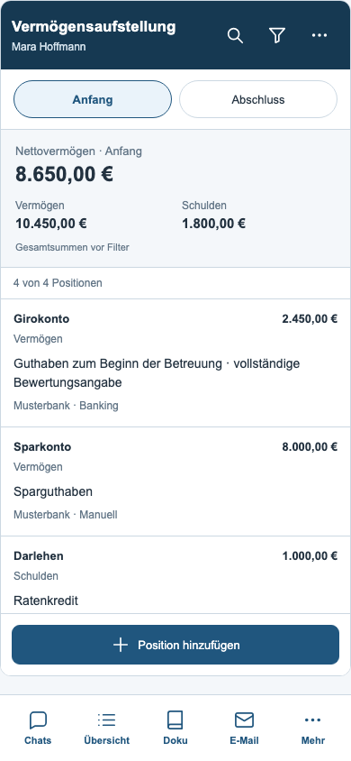
Abschlussvermögen
Eigenständige Abschlusswerte; die Gesamtsummen bleiben von Filtern unabhängig.
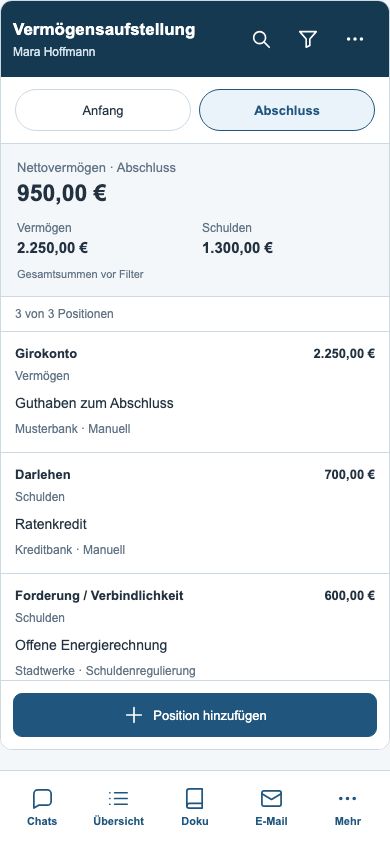
Spezifische Filter
Position, Kategorie, Institut, Herkunft und Sortierung.
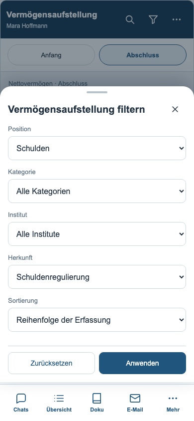
Positionsdetails
Alle vorhandenen Felder, Stand und Datenherkunft.
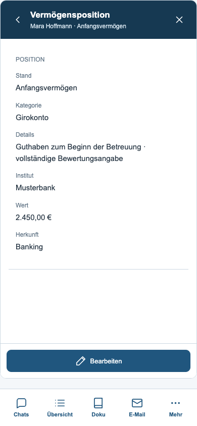
Position bearbeiten
Geschützter Entwurf mit Kategorie, Details, Institut und Wert.
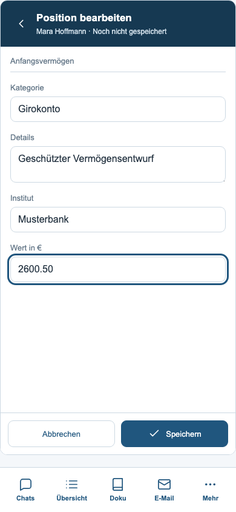
Neue Position
Vermögen oder Schulden zum Anfang oder Abschluss erfassen.
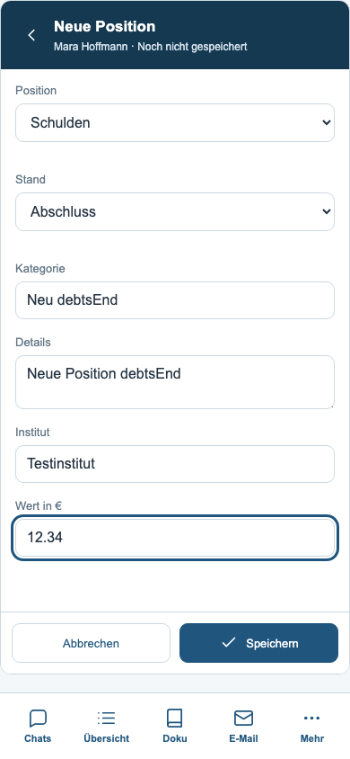
Schuldenregulierung
Übernommene Schulden behalten ihre Herkunft und ihren Schreibschutz.
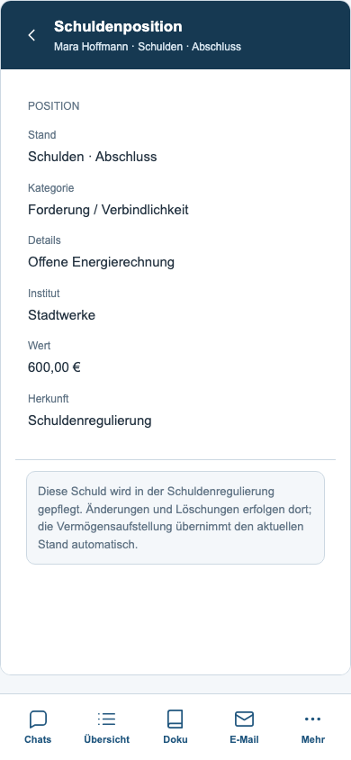
Vermögensaktionen
Fallwechsel und Übergabe an die vorhandenen Berichte.
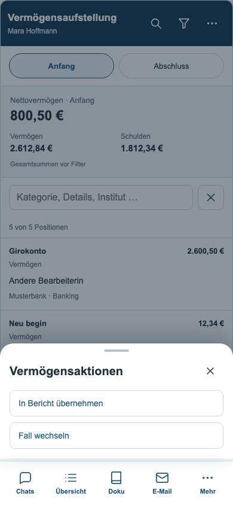
Bericht auswählen
Jahresbericht und Rechnungslegung für den geöffneten Fall.
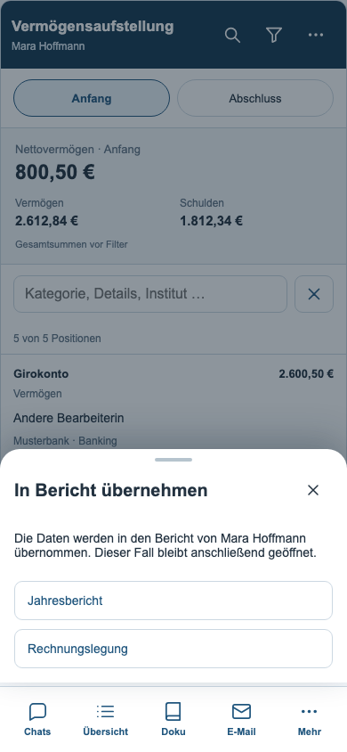
Übernahme in die Rechnungslegung
Der ausgewählte Testfall behält seine Bargeldwerte: 500 Euro zu Beginn und 420 Euro am Ende.
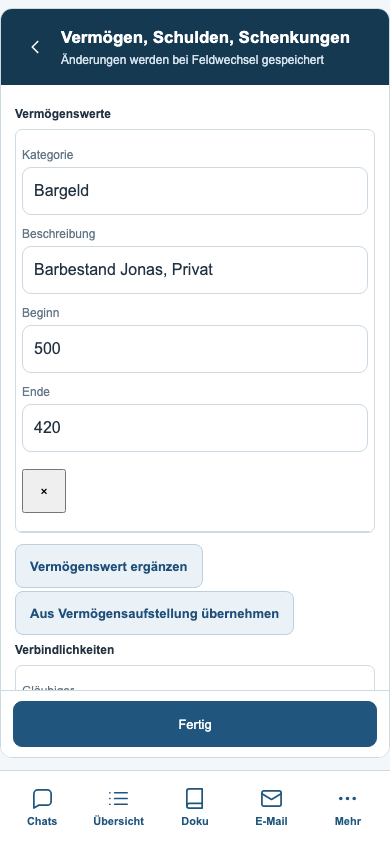
Gleichzeitige Änderung
Ein älterer Entwurf überschreibt keine zwischenzeitlich geänderte Position.
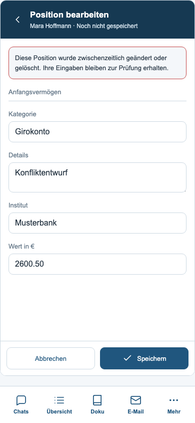
Geöffnete Tastatur
Simulation des verkleinerten Sichtbereichs: Navigation verborgen, Speichern erreichbar.
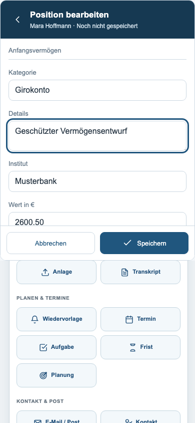
Dunkle Darstellung
Listen, Summen und Aktionen mit den gemeinsamen dunklen Farben.
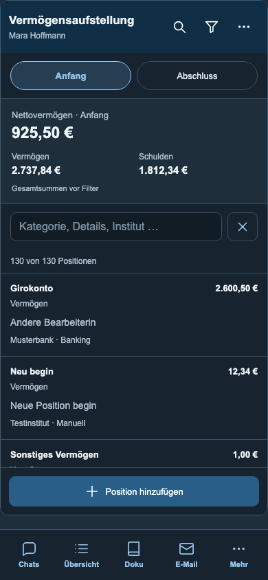